在Amy的工作室中， JUKI F600一直是頗受同學好評的縫紉機之一，不管是新手或是老手，初次使用F600 後，往往會主動跟我說，「老師，這台還蠻好車的…」，剛好 JUKI 的台灣代理商初次引進 F600 的兄弟機 F400，有著先前對 F600 不錯的印象，這次也幫工作室增添一部新成員來給學生試試。
F400 的機身尺寸與 F600 一模一樣，有著相同的馬達核心與機身配重，相信車縫的手感會與 F600 很類似，從規格上看來，JUKI F400 與 F600 最大的差別，在於花樣數量的差異，因此對於性能較為要求但不需要太多花樣的需求，F400 似乎是ＣＰ值更高的選擇。
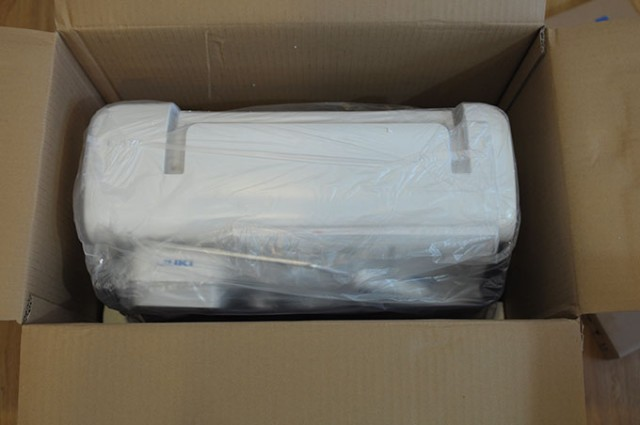
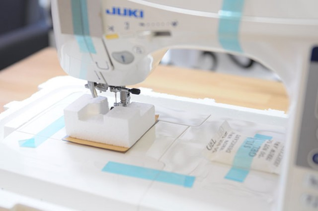
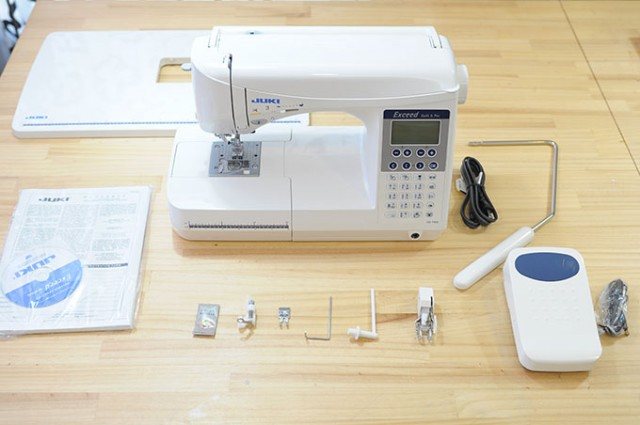
全部配件集合
先來張配件大合照，F400 的外觀幾乎與 F600 如出一轍，果然是兄弟機來著。
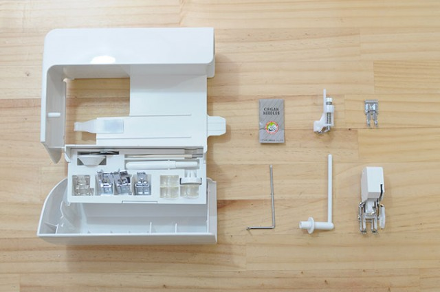
原廠隨機配件
自由曲線壓腳和均勻壓布腳都在原廠贈送的標準配件中。
ps: 後來發現這個置物盒有兩層耶，原廠附的開扣眼壓腳在下層，之後再補上圖片。
這個開扣眼壓腳很大一片，還有一條連結機身的感應線，看起來很厲害。使用方法可先看看原廠的介紹影片。 http://youtu.be/q0Hsk1zzVWg?t=15m7s
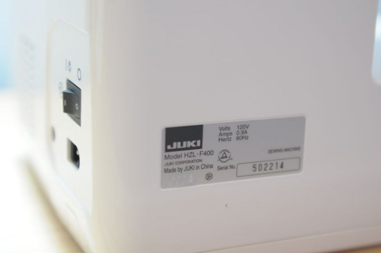
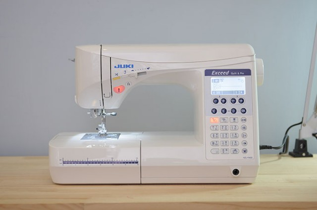
眼尖的你應該會發現，它的機身上方怎不見任何車線置放的位置，也不見捲底線的裝置呢?
等會兒為您解答。
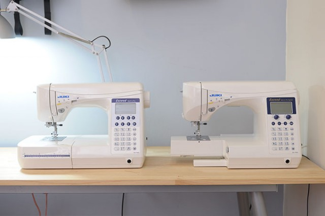
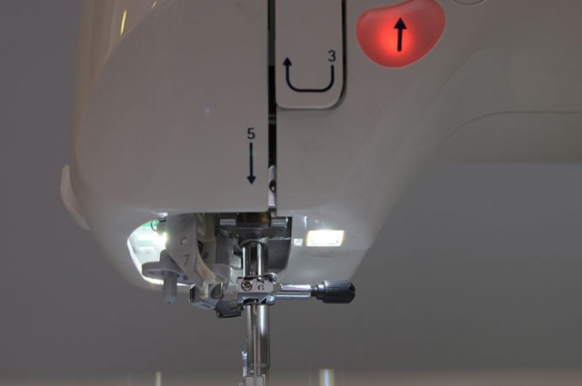
雙LED燈
F400 的LED燈比 F600 少一顆，亮度稍嫌不足，得再加工作燈會比較夠一些。
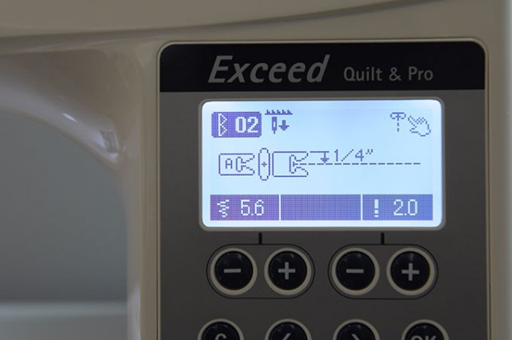
相當具像化的大螢幕面板
F400 跟 F600有相同的面板圖示設計，有很直覺的圖型化設計，如何選用壓腳及細節的尺寸標示都清楚明瞭。
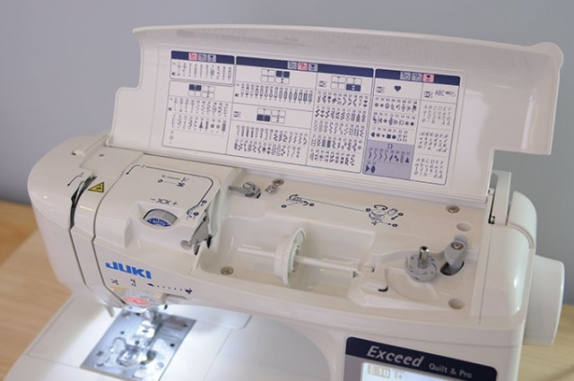
獨特的車線收納空間
登登，原來F400 的上蓋可以打開，裡頭還有不少機關呀！ 車線、自動捲線、花樣圖表及張力調整鈕都全收在上蓋裡頭，不但可保持機身整體的簡潔線條，還有些防塵的作用。
另外，大大推薦 F400 十分便利的自動捲線功能，不用腳踏或手按，只要往左撥就能自動完成底線的捲線。 看影片介紹 http://youtu.be/q0Hsk1zzVWg?t=8m3s
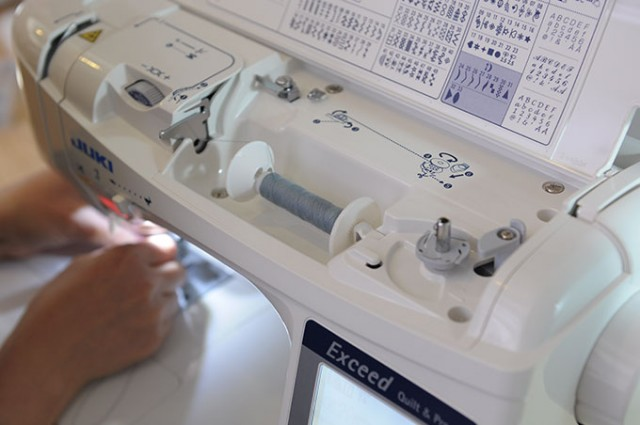
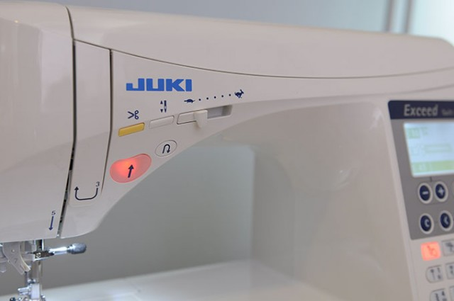
可愛又一目瞭然的速度圖示
同學都很喜歡它的速度調整鈕圖示，用兔子和烏龜來表示快慢，很可愛又好懂。
好用的自動剪線功能仍繼續保留在 Juki F400 。
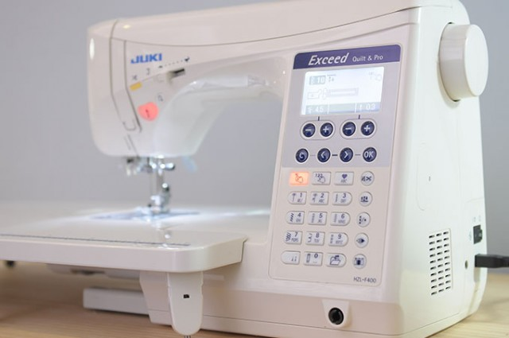
橘色背光按鈕和冷光大螢幕
F400 與 F600 有幾乎相同的面板設計，除了花樣較少外，在 F600 很有特色的針距針幅調整旋鈕，在F400 則改採按鈕式，這點有些可惜，F600 的旋鈕我還蠻愛的。
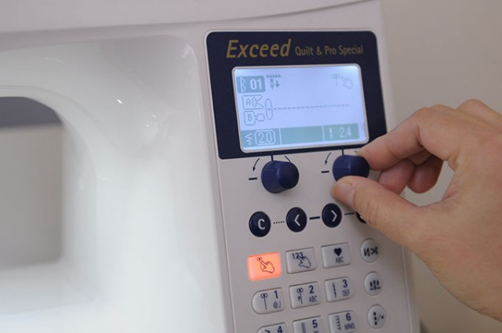
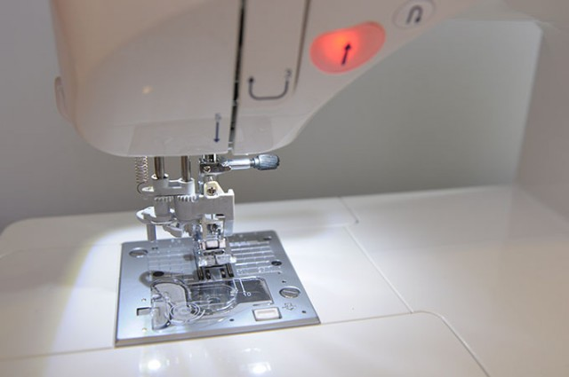
F400有著相當智慧的智慧自動穿線設計
依照穿線的步驟把線拉下來後，只要把線繞到側邊的切線口，再壓下自動穿線把手，線就神奇的穿入車針中了。 看影門介紹 http://youtu.be/q0Hsk1zzVWg?t=9m54s
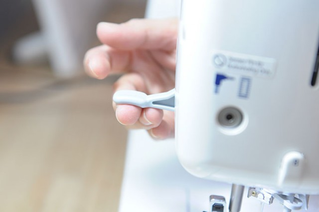
加長的壓腳抬起臂
壓腳抬起杆長度和厚度很夠，較為省力且很容易使用。
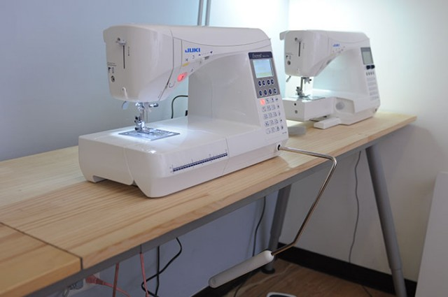
專業定位的膝抬杆裝置
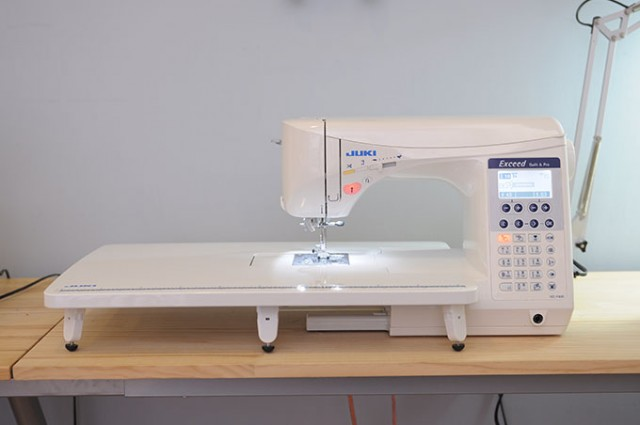
超級大的輔助板
JANOME 6030 與 JUKI F400 的輔助板尺寸比較
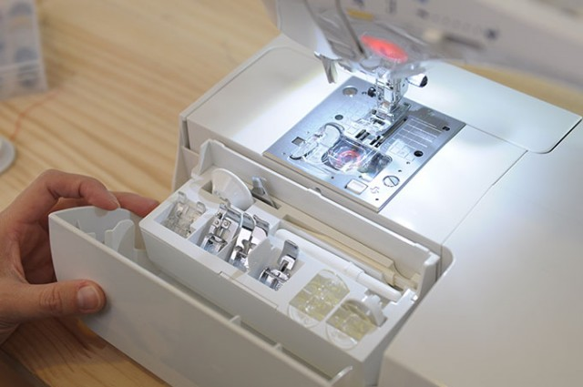
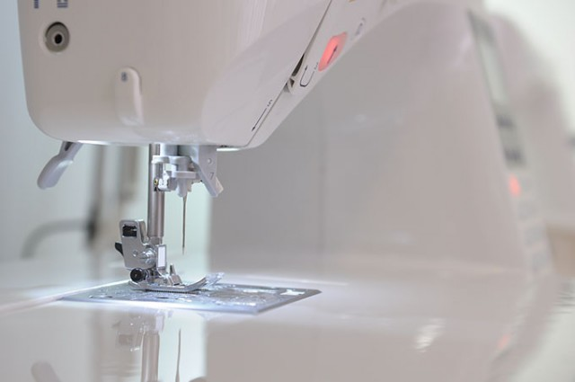 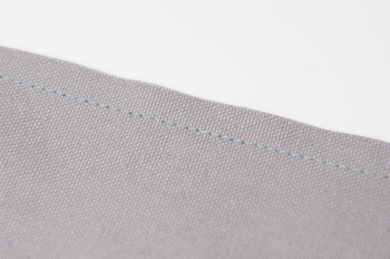
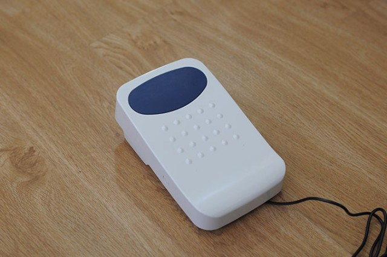
很有質感的腳踏板，前方貼心的加上止滑墊
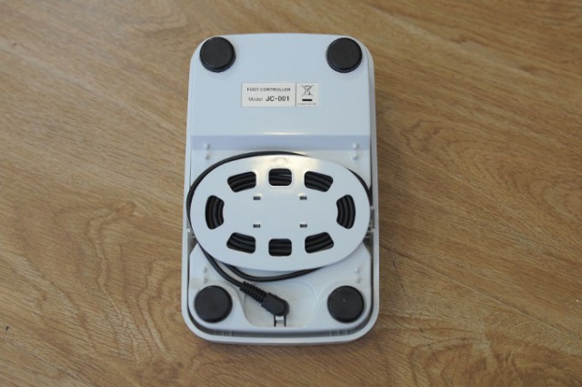
下方還有捲線槽，可以把腦人的線收的很好
腳踏板的設計是 Juki家用車的一大特色，前方大面的止滑墊，增加了不少腳踏的掌握控度，前踩是車縫，腳跟下壓則是自動剪線也是超級方便的大優點。
集合腳踏板，後踩自動剪線及膝抬杆於一身，加上最高900SPM的轉速，JUKI F400 真的很適合需要追求速度的手作玩家。
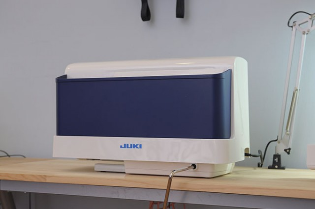
硬式收納盒
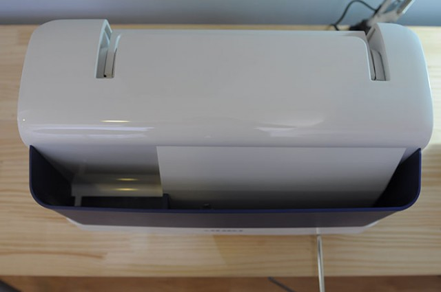
收納盒前方附有配件和車線收納空間
F400 初步車縫起來的感覺與 F600 幾乎相同，安靜、穩定，該有的都有了，專做工業車的JUKI，在家用車的設計仍保有不少「追求效率」的設計靈魂，像是很粗勇的壓腳抬起杆、超大面積的輔助桌、更為深且大的臂下作業空間等，雖然讓它看起來不是那麼秀氣細致，但的確讓它的機能性更為強大。
目前入手不到一週，但憑著使用 F600 已有一年多的經驗及信心，相信 F400 也會一部很好的縫紉機。接下來就讓 F400 在工作室待一陣子接受同學們的魔鬼訓練，再來分享它的使用心得嘍。
> 看各機型價格及贈品
暫不訂購！可填表單留email，將主動通知團購訊息
https://forms.gle/eJ5ErjTgP6EjFdWY8
我們會在每年會開兩次縫紉機團購，通常會在每年的三月及十月份左右，如果暫不急著訂購的話，可先填寫表單，留下正確的email，有開新的團購會主動通知您喔!

{kind=link}
{kind=link}
{kind=link}
{kind=link}
{kind=link}
{kind=link}
{kind=link}
{kind=link}
{kind=link}
{kind=link}
{kind=link}
{kind=link}
{kind=link}
{kind=link}
{kind=link}
{kind=link}
{kind=link}
{kind=link}
{kind=link}
{kind=link}
{kind=link}
{kind=link}
{kind=link}
{kind=link}
{kind=link}
{kind=link}
2017/11/17 at 4:32 上午
机器可以寄外国吗
2017/11/30 at 10:14 下午
說真的，不太建議喔，一方面寄送的過程風險太高了，一方面必須考慮到維修，建議還是在當地購買喔～
2017/03/10 at 9:31 上午
想買juki f600請問價格謝謝
2017/05/03 at 8:59 下午
您好，F600價格是36000元喔，我會送2000元的課程或材料包的折價，有需要可以mail給我喔，[email protected]，謝謝。
2017/03/04 at 8:20 下午
請問ＪＵＫＩＧ110 的機器可以車老師的帆布材料包嗎?
我是初學者，很喜歡老師的產品，正想購入一台機器。但是我的價位只能在一萬多，爬文發現JUKI 是很好的品牌，或是老師可以給我建議? 我想做各種提袋，能車厚布或帆布，也要有一些花樣(想做簡單刺繡)。 謝謝!
2017/03/08 at 11:30 下午
您好～
看這台的規格，車我的材料包很ok喔，
這台我沒用過，無法給您建議，但若是一萬多又有這麼多花樣實在很超值喔，
建議要買裁縫車試車過，還是比較好喔～
2016/06/30 at 4:05 下午
您好 請問JUKI F400 、F600，還有販售嗎？請問售價為何呢？謝謝您
2016/07/18 at 8:15 下午
您好，可幫您代訂喔，有需要的話，再麻煩寫mail給我，我再回覆售價給您喔，感謝[email protected]
2015/01/21 at 10:48 下午
晚安^^
那請問F400、 F600可以和Janome 760 車縫 8層帆布 嗎？(車縫~愛自由&好堅強後背包都沒問題嗎？)謝謝。
p.s JUKI 2010Q是否也有代購，售價？
2015/01/11 at 11:08 下午
老師好：請問這台適合車皮革嗎？
很不錯的開箱文～
2015/01/14 at 9:48 上午
薄的軟皮ok喔，但要換上皮革針和皮革壓腳喔。